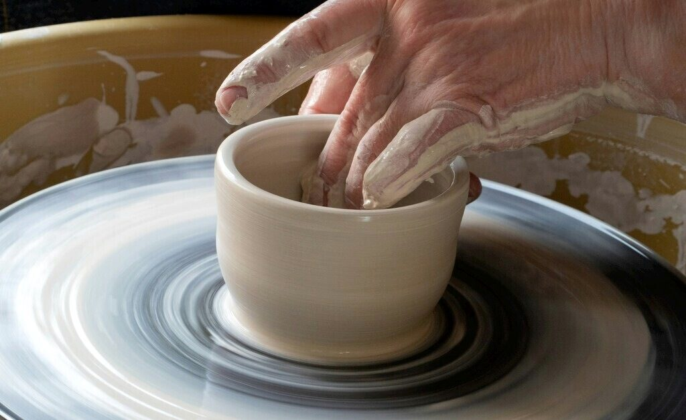
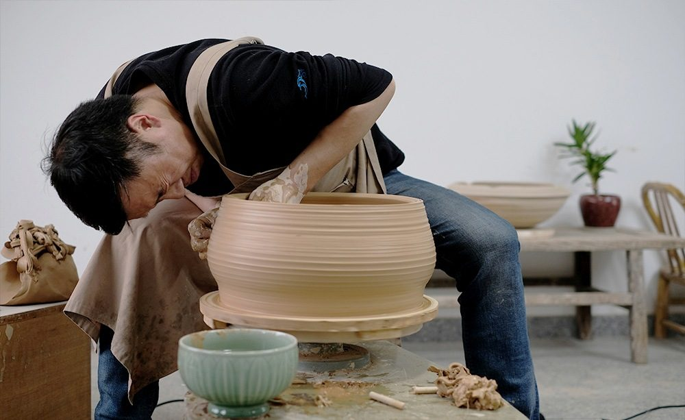
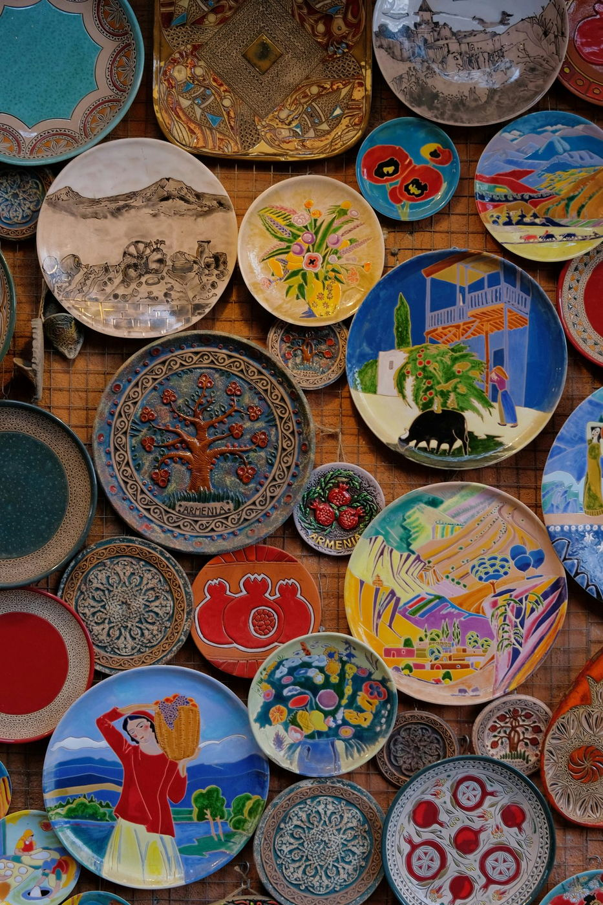

器物 · 泥与火
陶瓷
工序 01 / 05
拉坯
一抔泥，先在双手之间站起来。
陶轮转动，双手托住瓷土，慢慢拉出器物的轮廓。杯口的开合、腹部的弧度，从这一步开始；最后看见的轻盈，先要有一个稳妥的形。

工序 02 / 05
利坯
把多余的泥削去，留下恰好的厚薄。
行内说「三分拉坯七分利坯」。拉坯给出大形，利坯再用刀修整，让坯壁内外厚薄一致。器物握在手里的分量，也在这一道减法里逐渐确定。


工序 03 / 05
画坯
笔尖落下，纹样才有了呼吸。
青花以钴料分水，让浓淡在坯上展开；粉彩则以玻璃白打底。不同装饰有各自的工序，这里沿着青花釉下彩的路径，先看落笔，再看施釉。


工序 04 / 05
施釉
覆盖坯面的，是一层等待窑火的颜色。
釉的配方与原料，会影响烧成后的呈色。颜色釉另有自己的研究路径：1965 年，化学专业毕业的邓希平进入景德镇陶瓷研究所，从材料出发，反复调整配方、记录试烧结果。

工序 05 / 05
烧窑
入窑之后，颜色还要过火这一关。
原料的细微差别、窑温的起伏，都可能改变结果。项目所收录的《人民日报》报道记述，邓希平通过长期试验扩大了郎红釉成功呈色的温度区间。美不只在出窑的一刻，也在那些被记录、改进并教给后来人的经验里。